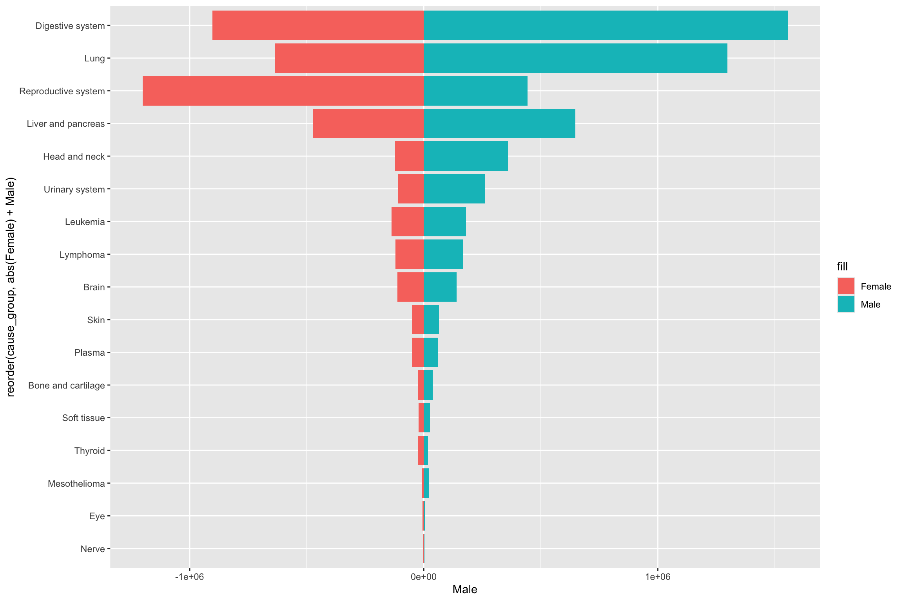
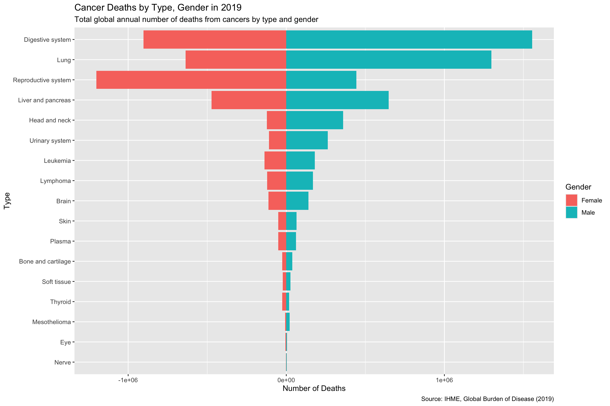

# Load necessary libraries
library(knitr)
library(ggplot2)
library(dplyr)
library(readr)
library(tidyr)
library(ggnewscale)
library(RColorBrewer)
library(scales)Main_Visualization
cancer_data <- read_csv("cancer-dataset.csv")Rows: 4326 Columns: 16
── Column specification ────────────────────────────────────────────────────────
Delimiter: ","
chr (6): measure_name, location_name, sex_name, age_name, cause_name, metri...
dbl (10): measure_id, location_id, sex_id, age_id, cause_id, metric_id, year...
ℹ Use `spec()` to retrieve the full column specification for this data.
ℹ Specify the column types or set `show_col_types = FALSE` to quiet this message.head(cancer_data)# A tibble: 6 × 16
measure_id measure_name location_id location_name sex_id sex_name age_id
<dbl> <chr> <dbl> <chr> <dbl> <chr> <dbl>
1 1 Deaths 1 Global 1 Male 22
2 1 Deaths 1 Global 2 Female 22
3 1 Deaths 1 Global 3 Both 22
4 1 Deaths 1 Global 1 Male 22
5 1 Deaths 1 Global 2 Female 22
6 1 Deaths 1 Global 3 Both 22
# ℹ 9 more variables: age_name <chr>, cause_id <dbl>, cause_name <chr>,
# metric_id <dbl>, metric_name <chr>, year <dbl>, val <dbl>, upper <dbl>,
# lower <dbl># Filter data for the year 2019 and measure 'Deaths'
cancer_data_2019 <- cancer_data %>%
filter(year == 2019, measure_name == "Deaths", age_name == "All ages") %>%
select(cause_name, sex_name, val)# Remove "Total cancers" and "Total excl. non-melanoma" from the dataset
cancer_data_2019 <- cancer_data_2019 %>%
filter(!cause_name %in% c("Total cancers", "Total Cancers excluding Non-melanoma skin cancer", "Other malignant neoplasms", "Other neoplasms"))# Define new cancer groups
cancer_data_2019 <- cancer_data_2019 %>%
mutate(cause_group = case_when(
cause_name %in% c("Soft tissue and other extraosseous sarcomas") ~ "Soft tissue",
cause_name %in% c("Neuroblastoma and other peripheral nervous cell tumors") ~ "Nerve",
cause_name %in% c("Breast cancer", "Cervical cancer", "Uterine cancer", "Prostate cancer", "Ovarian cancer", "Testicular cancer") ~ "Reproductive system",
cause_name %in% c("Colon and rectum cancer", "Stomach cancer", "Esophageal cancer") ~ "Digestive system",
cause_name %in% c("Lip and oral cavity cancer", "Nasopharynx cancer", "Other pharynx cancer", "Larynx cancer") ~ "Head and neck",
cause_name %in% c("Gallbladder and biliary tract cancer", "Liver cancer", "Pancreatic cancer") ~ "Liver and pancreas",
cause_name %in% c("Malignant skin melanoma", "Non-melanoma skin cancer") ~ "Skin",
cause_name %in% c("Kidney cancer", "Bladder cancer") ~ "Urinary system",
cause_name %in% c("Brain and central nervous system cancer") ~ "Brain",
cause_name %in% c("Thyroid cancer") ~ "Thyroid",
cause_name %in% c("Mesothelioma") ~ "Mesothelioma",
cause_name %in% c("Hodgkin lymphoma", "Non-Hodgkin lymphoma") ~ "Lymphoma",
cause_name %in% c("Multiple myeloma") ~ "Plasma",
cause_name %in% c("Leukemia") ~ "Leukemia",
cause_name %in% c("Tracheal, bronchus, and lung cancer") ~ "Lung",
cause_name %in% c("Other malignant neoplasms", "Other neoplasms") ~ "Other Neoplasms",
cause_name %in% c("Malignant neoplasm of bone and articular cartilage") ~ "Bone and cartilage",
cause_name %in% c("Eye cancer") ~ "Eye",
TRUE ~ cause_name
))# Group by new cancer groups and sum the values
cancer_data_grouped <- cancer_data_2019 |>
group_by(cause_group, sex_name) |>
summarise(val = sum(val, na.rm = TRUE), .groups = 'drop')# Pivot the data
cancer_data_long <- cancer_data_grouped|>
pivot_wider(names_from = sex_name, values_from = val, values_fill = list(val = 0))
# Round the values to 2 decimal places
cancer_data_long <- cancer_data_long |>
mutate(across(c(Male, Female), ~ round(.x, 2)))
# Adjust the sign for female deaths to create a bi-directional effect
cancer_data_long_base <- cancer_data_long |>
mutate(Female = -Female)End of Preprocessing
# Base Plot
# Geoms
p <- ggplot(cancer_data_long_base, aes(x = reorder(cause_group, abs(Female) + Male))) +
geom_bar(aes(y = Male, fill = "Male"), stat = "identity", width = 0.9) +
geom_bar(aes(y = Female, fill = "Female"), stat = "identity", width = 0.9) +
coord_flip()
p
# Plot Annotation
p <- p +
labs(
title = "Cancer Deaths by Type, Gender in 2019",
subtitle = "Total global annual number of deaths from cancers by type and gender",
x = "Type",
y = "Number of Deaths",
fill = "Gender",
caption = "Source: IHME, Global Burden of Disease (2019)"
)
p
# Scales + Guides
max_value <- max(abs(cancer_data_long_base$Male), abs(cancer_data_long_base$Female))
limit <- max_value * 1.2
p <- p +
scale_y_continuous(
limits = c(-limit, limit),
breaks = seq(-1.5e6, 1.5e6, by = 5e5),
labels = function(x) scales::comma(abs(x))
)
#p <- p +
# scale_y_continuous(
# limits = c(-limit, limit),
# trans = pseudo_log_trans(base = 10, sigma = 1e3), # Adjust sigma for more gradual scaling
# breaks = c(-10^6, -10^5, -10^4, 0, 10^4, 10^5, 10^6), # Logarithmic breaks
# labels = function(x) scales::comma(abs(x))
# )
p
# Data Annotations
p <- p +
geom_label(
aes(y = Female, label = formatC(abs(Female), format = "d", big.mark = ",")),
position = position_nudge(x = -0.05, y = 0), # Nudge slightly to the left
hjust = 1.1,
size = 4,
fill = "white",
label.size = 0
) +
geom_label(
aes(y = Male, label = formatC(Male, format = "d", big.mark = ",")),
position = position_nudge(x = 0.05, y = 0), # Nudge slightly to the right
hjust = -0.1,
size = 4,
fill = "white",
label.size = 0
)
p
# Theme
p <- p +
theme_minimal() +
theme(
axis.text.y = element_text(size = 14),
axis.text.x = element_text(size = 14),
axis.title.y = element_text(size = 16),
axis.title.x = element_text(size = 16),
plot.title = element_text(size = 20, face = "bold"),
plot.subtitle = element_text(size = 14),
legend.title = element_text(size = 14, hjust = 0.5),
legend.text = element_text(size = 14),
legend.position = "top",
plot.caption = element_text(size = 12),
panel.grid.major.y = element_line(color = "white"), # Darker major grid lines
panel.grid.major.x = element_line(color = "grey80"), # Darker major grid lines
panel.grid.minor.x = element_line(color = "grey80"), # Darker major grid lines
) +
theme(
plot.subtitle = element_text(margin = margin(b = 10)),
plot.margin = margin(t = 10, r = 10, b = 10, l = 10),
axis.title.x = element_text(margin = margin(t = 15, r = 10, b = 10, l = 10)),
axis.title.y = element_text(margin = margin(t = 10, r = 15, b = 10, l = 10)),
plot.caption = element_text(margin = margin(t = 10, r = 10, b = 10, l = 10)),
legend.title = element_blank()
)
p
# Color SchemesExperimental features below
# # TODO: Create the sequential color scheme for both female and male (reference the picture sent in the group) DONE
ggplot(cancer_data_long_base, aes(x = reorder(cause_group, abs(Female) + Male))) +
geom_bar(aes(y = Male, fill = Male), stat = "identity", width = 0.8) +
scale_fill_gradientn(name = "Male Deaths", colors = brewer.pal(9, "Blues")) +
new_scale_fill() +
geom_bar(aes(y = Female, fill = abs(Female)), stat = "identity", width = 0.8) +
scale_fill_gradientn(name = "Female Deaths", colors = brewer.pal(9, "Reds")) +
coord_flip() +
scale_y_continuous(labels = abs) +
labs(title = "Cancer Deaths by Type and Gender, World, 2019",
x = "Cancer Type",
y = "Number of Deaths") +
theme_minimal() +
theme(axis.text.y = element_text(size = 10),
axis.title.y = element_text(size = 12),
axis.title.x = element_text(size = 12),
plot.title = element_text(size = 16, face = "bold"),
legend.position = "top") +
geom_text(aes(y = Female, label = formatC(abs(Female), format = "d", big.mark = ",")),
position = position_stack(vjust = 0.5), hjust = 1.1, size = 3, color = "red") +
geom_text(aes(y = Male, label = formatC(Male, format = "d", big.mark = ",")),
position = position_stack(vjust = 0.5), hjust = -0.1, size = 3, color = "blue")
Footnote links for reference: https://training.seer.cancer.gov/disease/categories/classification.html https://www.cancer.gov/types https://www.cancerresearchuk.org/health-professional/cancer-statistics/statistics-by-cancer-type https://colorbrewer2.org/#type=sequential&scheme=Reds&n=3